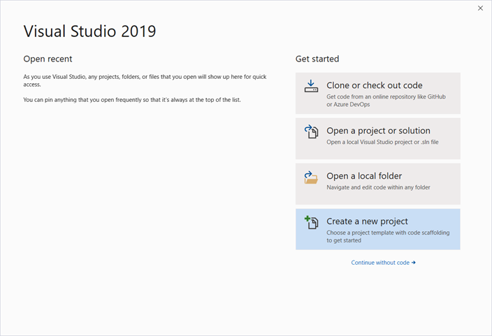
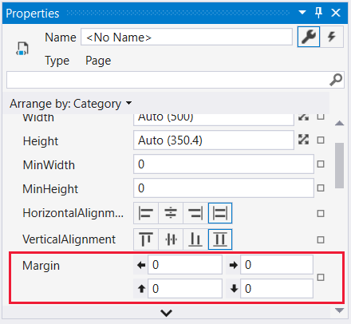

Пошаговое руководство. Создание классического приложения WPF
В этой статье показано, как разработать простое приложение Windows Presentation Foundation (WPF), которое включает общие для большинства приложений WPF элементы: расширяемый язык разметки приложений (XAML), код, определения приложений, элементы управления, макет интерфейса, привязки данных и стили.
Это пошаговое руководство включает следующие шаги:
Использование XAML для разработки пользовательского интерфейса (UI) приложения.
Написание кода, определяющего поведение приложения.
Создание определения приложения для управления приложением.
Добавление элементов управления и создание макета для пользовательского интерфейса приложения.
Создания таблиц стилей для согласованного отображения пользовательского интерфейса в приложении.
Использование привязки к данным для заполнения пользовательского интерфейса на основе данных.
В конце пошагового руководства будет создано автономное приложение Windows, которое позволяет пользователям просматривать отчеты о расходах для выбранных пользователей. Приложение состоит из нескольких страниц WPF, размещаемых в окне обозревателя.
Tip
Пример кода, который используется в этом пошаговом руководстве, доступен для Visual Basic и C# в Общие сведения о сборке приложений WPF.
Предварительные требования
Visual Studio 2017 или более поздней версии.
Дополнительные сведения об установке последней версии Visual Studio, см. в разделе установка Visual Studio.
Создание проекта приложения
Первым шагом является создание инфраструктуры приложения, которая включает в себя определение приложения, две страницы и изображение.
Создайте новый проект приложения WPF в Visual Basic или Visual C# с именем
ExpenseIt:Откройте Visual Studio и выберите Файл > Создать > Проект.
Откроется диалоговое окно Новый проект.
В разделе Установленные, разверните Visual C# или Visual Basic, а затем выберите Windows Desktop.
Выберите шаблон Приложение WPF (.NET Framework). Введите имя
ExpenseIt, а затем нажмите ОК.
Visual Studio создаст проект и откроет конструктор для окна приложения по умолчанию с именем MainWindow.xaml.
Note
В этом пошаговом руководстве используется элемент управления DataGrid, доступный в .NET Framework 4 и более поздних версиях. Дополнительные сведения о выборе целевой версии .NET см. в статье Visual Studio: Общие сведения о настройке целевой платформы.
Откройте Application.xaml (Visual Basic) или App.xaml (C#).
Этот файл XAML определяет WPF-приложение и все его ресурсы. Этот файл также используется для указания объекта пользовательского интерфейса, автоматически отображаемого при запуске приложения; в данном случае это MainWindow.xaml.
В C# он должен выглядеть следующим образом.
<Application x:Class="ExpenseIt.App" xmlns="http://schemas.microsoft.com/winfx/2006/xaml/presentation" xmlns:x="http://schemas.microsoft.com/winfx/2006/xaml" StartupUri="MainWindow.xaml"> <Application.Resources> </Application.Resources> </Application>Откройте MainWindow.xaml.
Этот файл XAML представляет главное окно приложения и отображает созданное содержимое страниц. Класс Window определяет свойства окна, такие как заголовок, размер и значок, и обрабатывает события (например, открытие и закрытие окна).
Замените Window на элемент NavigationWindow, как показано в следующем XAML:
<NavigationWindow x:Class="ExpenseIt.MainWindow" xmlns="http://schemas.microsoft.com/winfx/2006/xaml/presentation" xmlns:x="http://schemas.microsoft.com/winfx/2006/xaml" ... </NavigationWindow>Это приложение осуществляет переход к различному содержимому вводимых пользователем данных. Вот почему основное Window должно быть заменено на NavigationWindow. NavigationWindow наследует все свойства Window. Дополнительные сведения см. в разделе Общие сведения о переходах.
Измените следующие свойства NavigationWindow:
Задайте для свойства Title значение
ExpenseIt.Задайте для свойства Width значение 500 пикселей.
Задайте для свойства Height значение 350 пикселей.
Удалите Grid между тегами NavigationWindow.
В C# XAML должен выглядеть следующим образом.
<NavigationWindow x:Class="ExpenseIt.MainWindow" xmlns="http://schemas.microsoft.com/winfx/2006/xaml/presentation" xmlns:x="http://schemas.microsoft.com/winfx/2006/xaml" Title="ExpenseIt" Height="350" Width="500"> </NavigationWindow>Откройте MainWindow.xaml.vb или MainWindow.xaml.cs.
Этот файл является файлом кода, который содержит код для обработки событий, объявленных в MainWindow.xaml. Этот файл содержит разделяемый класс для окна, определенного в XAML-коде.
Если вы используете C#, измените
MainWindowкласса, чтобы он наследовал от NavigationWindow. (В Visual Basic это происходит автоматически при изменении окна в XAML.)Код должен выглядеть следующим образом:
using System; using System.Collections.Generic; using System.Linq; using System.Text; using System.Windows; using System.Windows.Controls; using System.Windows.Data; using System.Windows.Documents; using System.Windows.Input; using System.Windows.Media; using System.Windows.Media.Imaging; using System.Windows.Navigation; using System.Windows.Shapes; namespace ExpenseIt { /// <summary> /// Interaction logic for MainWindow.xaml /// </summary> public partial class MainWindow : NavigationWindow { public MainWindow() { InitializeComponent(); } } }
Добавление файлов в приложение
В этом разделе вы добавите в приложение две страницы и изображение.
Добавьте новую страницу WPF в проект и назовите её
ExpenseItHome.xaml:В обозревателе решений, щелкните правой кнопкой мыши
ExpenseItи выберите Добавить > Страница.В окне Добавление нового элемента, уже выбран шаблон Страница (WPF). Введите имя
ExpenseItHome, а затем нажмите Добавить.
Эта страница является первой страницей, которая отображается при запуске приложения. На ней отображается список пользователей для выбора пользователя, по которому необходимо сформировать отчет о расходах.
Откройте
ExpenseItHome.xaml.Задайте для Title значение
ExpenseIt - Home.В C# XAML должен выглядеть следующим образом.
<Page x:Class="ExpenseIt.ExpenseItHome" xmlns="http://schemas.microsoft.com/winfx/2006/xaml/presentation" xmlns:x="http://schemas.microsoft.com/winfx/2006/xaml" xmlns:mc="http://schemas.openxmlformats.org/markup-compatibility/2006" xmlns:d="http://schemas.microsoft.com/expression/blend/2008" mc:Ignorable="d" d:DesignHeight="350" d:DesignWidth="500" Title="ExpenseIt - Home"> <Grid> </Grid> </Page>Откройте MainWindow.xaml.
Задайте для Source у NavigationWindow значение
ExpenseItHome.xaml.Этот параметр задает
ExpenseItHome.xamlв качестве первой страницы, открываемой при запуске приложения.В C# XAML должен выглядеть следующим образом.
<NavigationWindow x:Class="ExpenseIt.MainWindow" xmlns="http://schemas.microsoft.com/winfx/2006/xaml/presentation" xmlns:x="http://schemas.microsoft.com/winfx/2006/xaml" Title="ExpenseIt" Height="350" Width="500" Source="ExpenseItHome.xaml"> </NavigationWindow>Tip
Можно также задать свойство Источник в категории свойств окна Разное.

Добавьте другую страницу WPF в проект и назовите её ExpenseReportPage.xaml:
В обозревателе решений, щелкните правой кнопкой мыши
ExpenseItи выберите Добавить > Страница.В окне Добавление нового элемента, уже выбран шаблон Страница (WPF). Введите имя ExpenseReportPage, а затем нажмите Добавить.
Эта страница будет отображать отчет по расходам для человека, выбранного на странице
ExpenseItHome.Откройте файл ExpenseReportPage.xaml.
Задайте для Title значение
ExpenseIt - View Expense.В C# XAML должен выглядеть следующим образом.
<Page x:Class="ExpenseIt.ExpenseReportPage" xmlns="http://schemas.microsoft.com/winfx/2006/xaml/presentation" xmlns:x="http://schemas.microsoft.com/winfx/2006/xaml" xmlns:mc="http://schemas.openxmlformats.org/markup-compatibility/2006" xmlns:d="http://schemas.microsoft.com/expression/blend/2008" mc:Ignorable="d" d:DesignHeight="350" d:DesignWidth="500" Title="ExpenseIt - View Expense"> <Grid> </Grid> </Page>Откройте ExpenseItHome.xaml.vb и ExpenseReportPage.xaml.vb, или ExpenseItHome.xaml.cs и ExpenseReportPage.xaml.cs.
При создании нового файла страницы Visual Studio автоматически создает файл кода. Эти файлы обрабатывают логику, реагирующую на действия пользователя.
Код должен выглядеть следующим образом для
ExpenseItHome:using System; using System.Collections.Generic; using System.Linq; using System.Text; using System.Windows; using System.Windows.Controls; using System.Windows.Data; using System.Windows.Documents; using System.Windows.Input; using System.Windows.Media; using System.Windows.Media.Imaging; using System.Windows.Navigation; using System.Windows.Shapes; namespace ExpenseIt { /// <summary> /// Interaction logic for ExpenseItHome.xaml /// </summary> public partial class ExpenseItHome : Page { public ExpenseItHome() { InitializeComponent(); } } }И следующим образом для ExpenseReportPage:
using System; using System.Collections.Generic; using System.Linq; using System.Text; using System.Windows; using System.Windows.Controls; using System.Windows.Data; using System.Windows.Documents; using System.Windows.Input; using System.Windows.Media; using System.Windows.Media.Imaging; using System.Windows.Navigation; using System.Windows.Shapes; namespace ExpenseIt { /// <summary> /// Interaction logic for ExpenseReportPage.xaml /// </summary> public partial class ExpenseReportPage : Page { public ExpenseReportPage() { InitializeComponent(); } } }Добавьте изображение с именем watermark.png в проект. Можно создать собственное изображение, скопировать файл из примера кода или загрузить его здесь.
Щелкните правой кнопкой мыши узел проекта и выберите добавить > существующий элемент.
В окне Добавить существующий элемент перейдите к файлу изображения, который вы хотите использовать, а затем выберите добавить.
{kind=link}
Построение и запуск приложения
Чтобы построить и запустить приложение, нажмите клавишу F5 или выберите начать отладку из меню Отладка.
Закройте приложение, чтобы вернуться в Visual Studio.
Создание макета
Макет позволяет упорядочивать размещение элементов пользовательского интерфейса и также управлять их размером и положением при изменении размера пользовательского интерфейса. Обычно макет создается с одним из следующих элементов управления макетом.
Каждый из этих элементов управления макетом поддерживает специальный тип макета дочерних элементов. Размер страницы ExpenseIt может быть изменен, и каждая страница имеет элементы, которые упорядочены по горизонтали и вертикали рядом с другими элементами. Следовательно, Grid является идеальным элементом макета для приложения.
Tip
Дополнительные сведения о элементе Panel см. в разделе Общие сведения о панелях. Дополнительные сведения о макете см. в разделе Макет.
В разделе создается таблица с одним столбцом и тремя строками, с полями шириной 10 пикселей, путем добавления определений столбцов и строк для Grid в ExpenseItHome.xaml.
Откройте
ExpenseItHome.xaml.Задайте для Margin у Grid значение «10,0,10,10», которое соответствует величине полей слева, сверху, справа и снизу:
<Grid Margin="10,0,10,10">Tip
Можно также задать Margin в категории макет свойств элемента:

Добавьте следующий XAML между тегов Grid, чтобы создать определения строк и столбцов:
<Grid.ColumnDefinitions> <ColumnDefinition /> </Grid.ColumnDefinitions> <Grid.RowDefinitions> <RowDefinition Height="Auto"/> <RowDefinition /> <RowDefinition Height="Auto"/> </Grid.RowDefinitions>Свойство Height двух строк имеет значение Auto, означающее, что размер строки определяется её содержимым. Значение по умолчанию для Height равно Star; это означает, что высота строки — это взвешенная пропорция доступного пространства. Например, если две строки имеют Height равную «*», каждый из них имеет высоту в размере половины доступного пространства.
Ваш Grid теперь должен иметь следующий XAML:
<Grid Margin="10,0,10,10"> <Grid.ColumnDefinitions> <ColumnDefinition /> </Grid.ColumnDefinitions> <Grid.RowDefinitions> <RowDefinition Height="Auto"/> <RowDefinition /> <RowDefinition Height="Auto"/> </Grid.RowDefinitions> </Grid>
Добавление элементов управления
В этом разделе вы обновите пользовательский интерфейс для отображения списка пользователей, для которых может выводиться отчет по расходам. Элементы управления — это объекты пользовательского интерфейса, позволяющие пользователям взаимодействовать с приложением. Более подробную информацию см. в разделе Элементы управления.
Чтобы создать этот пользовательский интерфейс, нужно добавить следующие элементы для ExpenseItHome.xaml:
- ListBox (для получения списка пользователей).
- Label (для заголовков списка).
- Button (чтобы при её нажатии вывести отчет по расходам для человека, выбранного в списке).
Каждый элемент управления помещается в строке Grid, в соответствии с заданным значением вложенного свойства зависимостей Grid.Row. Дополнительные сведения о вложенных свойствах см. в разделе Свойства зависимостей.
Откройте
ExpenseItHome.xaml.Добавьте следующий XAML где-то между тегов Grid:
<!-- People list --> <Border Grid.Column="0" Grid.Row="0" Height="35" Padding="5" Background="#4E87D4"> <Label VerticalAlignment="Center" Foreground="White">Names</Label> </Border> <ListBox Name="peopleListBox" Grid.Column="0" Grid.Row="1"> <ListBoxItem>Mike</ListBoxItem> <ListBoxItem>Lisa</ListBoxItem> <ListBoxItem>John</ListBoxItem> <ListBoxItem>Mary</ListBoxItem> </ListBox> <!-- View report button --> <Button Grid.Column="0" Grid.Row="2" Margin="0,10,0,0" Width="125" Height="25" HorizontalAlignment="Right">View</Button>Tip
Также можно создать элементы управления, перетащив их из панели элементов в окне конструктора, а затем задав их свойства в окне Свойства.
Выполните сборку и запуск приложения.
Добавить изображение и заголовок
В этом разделе вы обновите интерфейс пользователя домашней страницы, добавив изображение и заголовок страницы.
Откройте
ExpenseItHome.xaml.Добавьте еще один столбец в ColumnDefinitions с фиксированным значением Width, равным 230 пикселей:
<Grid.ColumnDefinitions> <ColumnDefinition Width="230" /> <ColumnDefinition /> </Grid.ColumnDefinitions>Добавьте другую строку в RowDefinitions:
<Grid.RowDefinitions> <RowDefinition/> <RowDefinition Height="Auto"/> <RowDefinition /> <RowDefinition Height="Auto"/> </Grid.RowDefinitions>Переместите элементы управления во второй столбец, задав свойству Grid.Column значение 1, в каждом из трех элементов управления (Border, ListBox и Button).
Переместите каждый элемент управления вниз на одну строку, увеличивая на 1 значение его свойства Grid.Row.
XAML для трех элементов управления теперь выглядит следующим образом:
<Border Grid.Column="1" Grid.Row="1" Height="35" Padding="5" Background="#4E87D4"> <Label VerticalAlignment="Center" Foreground="White">Names</Label> </Border> <ListBox Name="peopleListBox" Grid.Column="1" Grid.Row="2"> <ListBoxItem>Mike</ListBoxItem> <ListBoxItem>Lisa</ListBoxItem> <ListBoxItem>John</ListBoxItem> <ListBoxItem>Mary</ListBoxItem> </ListBox> <!-- View report button --> <Button Grid.Column="1" Grid.Row="3" Margin="0,10,0,0" Width="125" Height="25" HorizontalAlignment="Right">View</Button>Присвойте свойству Background у Grid в качестве значения файл изображения watermark.png, добавив следующий XAML где-то между
<Grid>и</Grid>:<Grid.Background> <ImageBrush ImageSource="watermark.png"/> </Grid.Background>Перед элементом Border добавьте Label с содержимым «View Expense Report». Это заголовок страницы.
<Label Grid.Column="1" VerticalAlignment="Center" FontFamily="Trebuchet MS" FontWeight="Bold" FontSize="18" Foreground="#0066cc"> View Expense Report </Label>Выполните сборку и запуск приложения.
На следующем рисунке показан полученный результат:
Добавьте код для обработки событий
Откройте
ExpenseItHome.xaml.Добавьте обработчик события Click у Button. Дополнительные сведения см. в разделе Создание простого обработчика событий.
<!-- View report button --> <Button Grid.Column="1" Grid.Row="3" Margin="0,10,0,0" Width="125" Height="25" HorizontalAlignment="Right" Click="Button_Click">View</Button>Откройте
ExpenseItHome.xaml.vbилиExpenseItHome.xaml.cs.Добавьте следующий код, в класс
ExpenseItHome, чтобы добавить обработчик события щелчка кнопки. Обработчик событий открывает страницу ExpenseReportPage.private void Button_Click(object sender, RoutedEventArgs e) { // View Expense Report ExpenseReportPage expenseReportPage = new ExpenseReportPage(); this.NavigationService.Navigate(expenseReportPage); }
Создание пользовательского интерфейса для страницы ExpenseReportPage
ExpenseReportPage.xaml отображает отчет по расходам для человека, выбранного на странице ExpenseItHome. В этом разделе вы создадите пользовательский интерфейс для ExpenseReportPage. Вы также добавите фон и цвет заливки для различных элементов пользовательского интерфейса.
Откройте файл ExpenseReportPage.xaml.
Добавьте следующий XAML между тегами Grid:
<Grid.Background> <ImageBrush ImageSource="watermark.png" /> </Grid.Background> <Grid.ColumnDefinitions> <ColumnDefinition Width="230" /> <ColumnDefinition /> </Grid.ColumnDefinitions> <Grid.RowDefinitions> <RowDefinition Height="Auto" /> <RowDefinition /> </Grid.RowDefinitions> <Label Grid.Column="1" VerticalAlignment="Center" FontFamily="Trebuchet MS" FontWeight="Bold" FontSize="18" Foreground="#0066cc"> Expense Report For: </Label> <Grid Margin="10" Grid.Column="1" Grid.Row="1"> <Grid.ColumnDefinitions> <ColumnDefinition /> <ColumnDefinition /> </Grid.ColumnDefinitions> <Grid.RowDefinitions> <RowDefinition Height="Auto" /> <RowDefinition Height="Auto" /> <RowDefinition /> </Grid.RowDefinitions> <!-- Name --> <StackPanel Grid.Column="0" Grid.ColumnSpan="2" Grid.Row="0" Orientation="Horizontal"> <Label Margin="0,0,0,5" FontWeight="Bold">Name:</Label> <Label Margin="0,0,0,5" FontWeight="Bold"></Label> </StackPanel> <!-- Department --> <StackPanel Grid.Column="0" Grid.ColumnSpan="2" Grid.Row="1" Orientation="Horizontal"> <Label Margin="0,0,0,5" FontWeight="Bold">Department:</Label> <Label Margin="0,0,0,5" FontWeight="Bold"></Label> </StackPanel> <Grid Grid.Column="0" Grid.ColumnSpan="2" Grid.Row="2" VerticalAlignment="Top" HorizontalAlignment="Left"> <!-- Expense type and Amount table --> <DataGrid AutoGenerateColumns="False" RowHeaderWidth="0" > <DataGrid.ColumnHeaderStyle> <Style TargetType="{x:Type DataGridColumnHeader}"> <Setter Property="Height" Value="35" /> <Setter Property="Padding" Value="5" /> <Setter Property="Background" Value="#4E87D4" /> <Setter Property="Foreground" Value="White" /> </Style> </DataGrid.ColumnHeaderStyle> <DataGrid.Columns> <DataGridTextColumn Header="ExpenseType" /> <DataGridTextColumn Header="Amount" /> </DataGrid.Columns> </DataGrid> </Grid> </Grid>Этот пользовательский интерфейс аналогичен
ExpenseItHome.xaml, за исключением того, что данные отчета отображаются в DataGrid.Выполните сборку и запуск приложения.
Note
Если отобразится сообщение об ошибке, DataGrid не найден или не существует, убедитесь, что ваш проект использует .NET Framework 4 или более поздней версии. Дополнительные сведения о выборе целевой версии .NET см. в статье Visual Studio: Общие сведения о настройке целевой платформы.
Нажмите кнопку View.
Появится страница отчета по расходам. Также обратите внимание на то, что кнопка возврата активна.
На следующем рисунке показаны элементы пользовательского интерфейса, добавленные в ExpenseReportPage.xaml.

Определение стиля элементов управления
Внешний вид различных элементов часто является одинаковым для всех элементов одного типа в пользовательском интерфейсе. Пользовательский интерфейс использует стили для многократного использования паарметров внешнего вида у нескольких элементов. Повторное использование стилей помогает упростить создание XAML и управление им. В этом разделе атрибуты, установленные ранее для каждого элемента, заменяются стилями.
Откройте Application.xaml или App.xaml.
Добавьте следующий XAML между тагами Application.Resources:
<!-- Header text style --> <Style x:Key="headerTextStyle"> <Setter Property="Label.VerticalAlignment" Value="Center"></Setter> <Setter Property="Label.FontFamily" Value="Trebuchet MS"></Setter> <Setter Property="Label.FontWeight" Value="Bold"></Setter> <Setter Property="Label.FontSize" Value="18"></Setter> <Setter Property="Label.Foreground" Value="#0066cc"></Setter> </Style> <!-- Label style --> <Style x:Key="labelStyle" TargetType="{x:Type Label}"> <Setter Property="VerticalAlignment" Value="Top" /> <Setter Property="HorizontalAlignment" Value="Left" /> <Setter Property="FontWeight" Value="Bold" /> <Setter Property="Margin" Value="0,0,0,5" /> </Style> <!-- DataGrid header style --> <Style x:Key="columnHeaderStyle" TargetType="{x:Type DataGridColumnHeader}"> <Setter Property="Height" Value="35" /> <Setter Property="Padding" Value="5" /> <Setter Property="Background" Value="#4E87D4" /> <Setter Property="Foreground" Value="White" /> </Style> <!-- List header style --> <Style x:Key="listHeaderStyle" TargetType="{x:Type Border}"> <Setter Property="Height" Value="35" /> <Setter Property="Padding" Value="5" /> <Setter Property="Background" Value="#4E87D4" /> </Style> <!-- List header text style --> <Style x:Key="listHeaderTextStyle" TargetType="{x:Type Label}"> <Setter Property="Foreground" Value="White" /> <Setter Property="VerticalAlignment" Value="Center" /> <Setter Property="HorizontalAlignment" Value="Left" /> </Style> <!-- Button style --> <Style x:Key="buttonStyle" TargetType="{x:Type Button}"> <Setter Property="Width" Value="125" /> <Setter Property="Height" Value="25" /> <Setter Property="Margin" Value="0,10,0,0" /> <Setter Property="HorizontalAlignment" Value="Right" /> </Style>Этот код XAML добавляет следующие стили:
headerTextStyle: Для форматирования заголовка страницы Label.labelStyle: Для форматирования Label.columnHeaderStyle: Для форматирования DataGridColumnHeader.listHeaderStyle: Для форматирования Border заголовка списка.listHeaderTextStyle: Для форматирования Label в заголовке списка.buttonStyle: Для форматирования Button наExpenseItHome.xaml.
Обратите внимание на то, что стили представляют собой ресурсы и являются дочерними для свойства Application.Resources. Здесь стили применяются ко всем элементам в приложении. Пример использования ресурсов в приложении .NET Framework см. в разделе использование ресурсов приложения.
Откройте
ExpenseItHome.xaml.Замените весь код в Grid на следующий XAML:
<Grid.Background> <ImageBrush ImageSource="watermark.png" /> </Grid.Background> <Grid.ColumnDefinitions> <ColumnDefinition Width="230" /> <ColumnDefinition /> </Grid.ColumnDefinitions> <Grid.RowDefinitions> <RowDefinition/> <RowDefinition Height="Auto"/> <RowDefinition /> <RowDefinition Height="Auto"/> </Grid.RowDefinitions> <!-- People list --> <Label Grid.Column="1" Style="{StaticResource headerTextStyle}" > View Expense Report </Label> <Border Grid.Column="1" Grid.Row="1" Style="{StaticResource listHeaderStyle}"> <Label Style="{StaticResource listHeaderTextStyle}">Names</Label> </Border> <ListBox Name="peopleListBox" Grid.Column="1" Grid.Row="2"> <ListBoxItem>Mike</ListBoxItem> <ListBoxItem>Lisa</ListBoxItem> <ListBoxItem>John</ListBoxItem> <ListBoxItem>Mary</ListBoxItem> </ListBox> <!-- View report button --> <Button Grid.Column="1" Grid.Row="3" Click="Button_Click" Style="{StaticResource buttonStyle}">View</Button>Свойства, определяющие внешний вид элементов управления, такие как VerticalAlignment и FontFamily, при применении стилей удаляются и заменяются. Например
headerTextStyleприменяется к Label «View Expense Report».Откройте файл ExpenseReportPage.xaml.
Замените весь код в Grid на следующий XAML:
<Grid.Background> <ImageBrush ImageSource="watermark.png" /> </Grid.Background> <Grid.ColumnDefinitions> <ColumnDefinition Width="230" /> <ColumnDefinition /> </Grid.ColumnDefinitions> <Grid.RowDefinitions> <RowDefinition Height="Auto" /> <RowDefinition /> </Grid.RowDefinitions> <Label Grid.Column="1" Style="{StaticResource headerTextStyle}"> Expense Report For: </Label> <Grid Margin="10" Grid.Column="1" Grid.Row="1"> <Grid.ColumnDefinitions> <ColumnDefinition /> <ColumnDefinition /> </Grid.ColumnDefinitions> <Grid.RowDefinitions> <RowDefinition Height="Auto" /> <RowDefinition Height="Auto" /> <RowDefinition /> </Grid.RowDefinitions> <!-- Name --> <StackPanel Grid.Column="0" Grid.ColumnSpan="2" Grid.Row="0" Orientation="Horizontal"> <Label Style="{StaticResource labelStyle}">Name:</Label> <Label Style="{StaticResource labelStyle}"></Label> </StackPanel> <!-- Department --> <StackPanel Grid.Column="0" Grid.ColumnSpan="2" Grid.Row="1" Orientation="Horizontal"> <Label Style="{StaticResource labelStyle}">Department:</Label> <Label Style="{StaticResource labelStyle}"></Label> </StackPanel> <Grid Grid.Column="0" Grid.ColumnSpan="2" Grid.Row="2" VerticalAlignment="Top" HorizontalAlignment="Left"> <!-- Expense type and Amount table --> <DataGrid ColumnHeaderStyle="{StaticResource columnHeaderStyle}" AutoGenerateColumns="False" RowHeaderWidth="0" > <DataGrid.Columns> <DataGridTextColumn Header="ExpenseType" /> <DataGridTextColumn Header="Amount" /> </DataGrid.Columns> </DataGrid> </Grid> </Grid>
Привязка данных к элементу управления
В этом разделе вы создадите XML-данные, привязанные к различным элементам управления.
Откройте
ExpenseItHome.xaml.После открывающего элемента Grid, добавьте следующий XAML для создания XmlDataProvider, содержащий данные для каждого пользователя:
<Grid.Resources><!-- Expense Report Data --> <XmlDataProvider x:Key="ExpenseDataSource" XPath="Expenses"> <x:XData> <Expenses xmlns=""> <Person Name="Mike" Department="Legal"> <Expense ExpenseType="Lunch" ExpenseAmount="50" /> <Expense ExpenseType="Transportation" ExpenseAmount="50" /> </Person> <Person Name="Lisa" Department="Marketing"> <Expense ExpenseType="Document printing" ExpenseAmount="50"/> <Expense ExpenseType="Gift" ExpenseAmount="125" /> </Person> <Person Name="John" Department="Engineering"> <Expense ExpenseType="Magazine subscription" ExpenseAmount="50"/> <Expense ExpenseType="New machine" ExpenseAmount="600" /> <Expense ExpenseType="Software" ExpenseAmount="500" /> </Person> <Person Name="Mary" Department="Finance"> <Expense ExpenseType="Dinner" ExpenseAmount="100" /> </Person> </Expenses> </x:XData> </XmlDataProvider></Grid.Resources>Данные создаются как ресурсы Grid. Обычно такие данные загружаются в виде файла, но для простоты в этом примере они добавляются в коде.
В элемент
<Grid.Resources>добавьте следующий DataTemplate, который определяет способ отображения данных в ListBox:<Grid.Resources><!-- Name item template --> <DataTemplate x:Key="nameItemTemplate"> <Label Content="{Binding XPath=@Name}"/> </DataTemplate></Grid.Resources>Дополнительные сведения о шаблонах данных см. в разделе Общие сведения о шаблонах данных.
Замените существующий ListBox следующим XAML:
<ListBox Name="peopleListBox" Grid.Column="1" Grid.Row="2" ItemsSource="{Binding Source={StaticResource ExpenseDataSource}, XPath=Person}" ItemTemplate="{StaticResource nameItemTemplate}"> </ListBox>Этот XAML привязывает свойство ItemsSource элемента ListBox к источнику данных и применяет шаблон данных ItemTemplate.
Подключение данных к элементам управления
Далее добавим код для извлечения имени, выбранного на странице ExpenseItHome и передачи его конструктору ExpenseReportPage. ExpenseReportPage задает контекст данных для переданного элемента к которому привязываются элементы управления, определенные в ExpenseReportPage.xaml.
Откройте файл ExpenseReportPage.xaml.vb или ExpenseReportPage.xaml.cs.
Добавьте конструктор, принимающий объект, чтобы можно было передавать данные отчета о затратах выбранного человека.
public partial class ExpenseReportPage : Page { public ExpenseReportPage() { InitializeComponent(); } // Custom constructor to pass expense report data public ExpenseReportPage(object data):this() { // Bind to expense report data. this.DataContext = data; } }Откройте
ExpenseItHome.xaml.vbилиExpenseItHome.xaml.cs.Измените обработчик Click, добавив вызов конструктора, передавая отчет о затратах выбранного человека.
private void Button_Click(object sender, RoutedEventArgs e) { // View Expense Report ExpenseReportPage expenseReportPage = new ExpenseReportPage(this.peopleListBox.SelectedItem); this.NavigationService.Navigate(expenseReportPage); }
Стиль с использованием шаблонов данных
В этом разделе вы обновите пользовательский Интерфейс для каждого элемента в списках с привязкой к данным с помощью шаблонов данных.
Откройте файл ExpenseReportPage.xaml.
Привяжите содержимое Label «Name» и «Department» к свойствам. Дополнительные сведения о привязке данных см. в разделе Общие сведения о привязке данных.
<!-- Name --> <StackPanel Grid.Column="0" Grid.ColumnSpan="2" Grid.Row="0" Orientation="Horizontal"> <Label Style="{StaticResource labelStyle}">Name:</Label> <Label Style="{StaticResource labelStyle}" Content="{Binding XPath=@Name}"></Label> </StackPanel> <!-- Department --> <StackPanel Grid.Column="0" Grid.ColumnSpan="2" Grid.Row="1" Orientation="Horizontal"> <Label Style="{StaticResource labelStyle}">Department:</Label> <Label Style="{StaticResource labelStyle}" Content="{Binding XPath=@Department}"></Label> </StackPanel>После открывающего элемента Grid добавьте следующие шаблоны данных, которые определяют способ отображения данных отчета о расходах:
<!--Templates to display expense report data--> <Grid.Resources> <!-- Reason item template --> <DataTemplate x:Key="typeItemTemplate"> <Label Content="{Binding XPath=@ExpenseType}"/> </DataTemplate> <!-- Amount item template --> <DataTemplate x:Key="amountItemTemplate"> <Label Content="{Binding XPath=@ExpenseAmount}"/> </DataTemplate> </Grid.Resources>Замените DataGridTextColumn на DataGridTemplateColumn у элемента DataGrid и примените шаблоны к ним.
<!-- Expense type and Amount table --> <DataGrid ItemsSource="{Binding XPath=Expense}" ColumnHeaderStyle="{StaticResource columnHeaderStyle}" AutoGenerateColumns="False" RowHeaderWidth="0" > <DataGrid.Columns> <DataGridTemplateColumn Header="ExpenseType" CellTemplate="{StaticResource typeItemTemplate}" /> <DataGridTemplateColumn Header="Amount" CellTemplate="{StaticResource amountItemTemplate}" /> </DataGrid.Columns> </DataGrid>Выполните сборку и запуск приложения.
Выберите "person", а затем нажмите View.
На следующем рисунке показаны обе страницы приложения ExpenseIt с элементами управления, макетом, стилями, привязками данных и примененными шаблонами данных:
Note
В этом примере демонстрируется конкретная функциональная возможность WPF и не cj,k.lf.ncz все рекомендации по безопасности, локализации и специальным возможностям. Исчерпывающая информация о WPF и рекомендации по разработке приложений .NET Framework см. в следующих разделах:
Следующие шаги
В этом пошаговом руководстве вы узнали ряд методов для создания пользовательского интерфейса с помощью Windows Presentation Foundation (WPF). Теперь вы должны знать основные стандартные блоки приложения .NET Framework для работы с данными. Более подробную информацию об архитектуре и моделях программирования WPF см. в следующих разделах:
Более подробную информацию о создании приложений см. в следующих разделах:
- Разработка приложений
- Элементы управления
- Общие сведения о привязке данных
- Графика и мультимедиа
- Документы в WPF